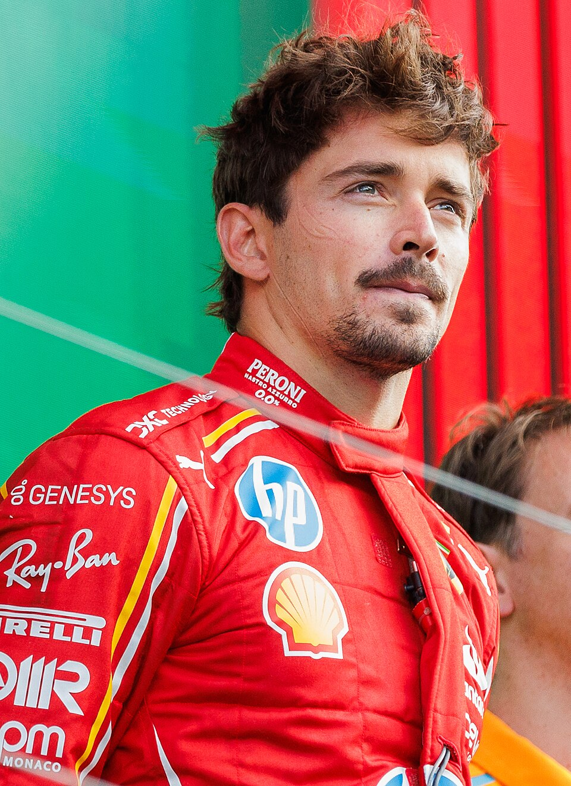

ON THE COURTSC / 30
篮球 / NBA / 2K
FAVOURITE PLAYER
STEPHEN CURRY.
斯蒂芬·库里
最喜欢的球星是库里。喜欢自己上场打球，也爱看 NBA；离开球场，就在 2K 里继续。
万物流动不止。我在迪拜读书，在球场上奔跑，在赛道边心跳，在代码里造梦。世界很大，日子很快，而我只想把每一天都过得滚烫——保持热爱，保持初心。
Everything in flow
万物流动，皆有回响。不停下，也不慌张。
生活万岁
认真生活，尽情热爱。远方要去，眼前也要珍惜。
Stay true to the spring
不论走多远，都记得为什么出发。
# 你好，再正式认识一下。
我是 ChefZC，一名在迪拜生活的 Year 12 高中生，目前在 GEMS Wellington International School 攻读 IB。
我对生活充满热爱和向往：想去看广阔的远方、世界的美景，也想认真感受眼前的美好。篮球、赛车、画画和书法，是生活里让我投入其中的事；电脑硬件、AI 趋势和 Agent，则让我一直想弄明白「它是怎么做到的」。
未来，我想成为计算机工程师，或者空气动力学设计者。
一边学习，一边把热爱变成自己的方向。
学习中，热爱不设限。
球场、赛道，还有脑海里的新想法。
ON THE COURTSC / 30
篮球 / NBA / 2K
FAVOURITE PLAYER
斯蒂芬·库里
最喜欢的球星是库里。喜欢自己上场打球，也爱看 NBA；离开球场，就在 2K 里继续。

LIGHTS OUTCL / 16
赛车 / F1 / 勒芒
FAVOURITE DRIVER
夏尔·勒克莱尔
从 F1 到勒芒，赛车总能让我投入其中。最喜欢的车手是勒克莱尔，也向往有一天参与空气动力学设计。
AGENT / 神经网络
喜欢折腾 Agent、追踪 AI 新闻和趋势。目前正在学习神经网络，常用 Codex，也开始用 ChatGPT Pro 探索更多可能。
正在学习 · 神经网络
画画 / 书法
画画，也写书法。用线条和笔墨，留住生活里喜欢的东西。
生活 / 远方
向往广阔的世界、美丽的风景，也珍惜眼前细小而真实的美好。
研究硬件，也用它们学习和探索。
主力电脑01
平板02
512 GB
手机03
256 GB
AI 搭档
设计与影像
关于 AI、篮球、赛车，或是一个有意思的新想法。
Stephen Curry: Keith Allison · Wikimedia Commons · CC BY-SA 2.0. Commons crop: TBMNY / Bagumba.
Charles Leclerc: Steffen Prößdorf · Wikimedia Commons · CC BY-SA 4.0. Commons crop: Mb2437.
Display crops, colour treatments and overlays; adapted photographs retain their respective CC BY-SA licences. Icons: Lucide (ISC) and Tabler (MIT).